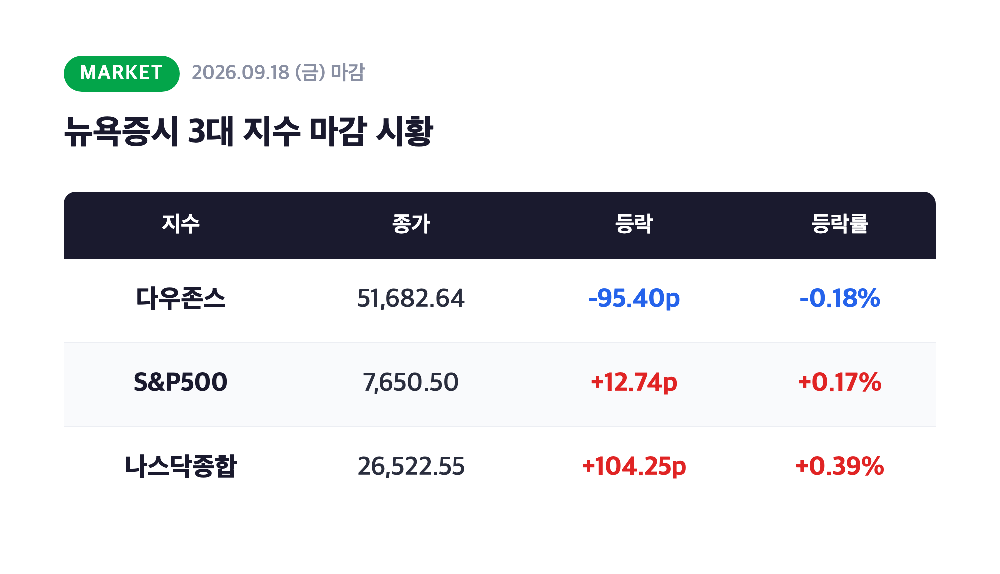
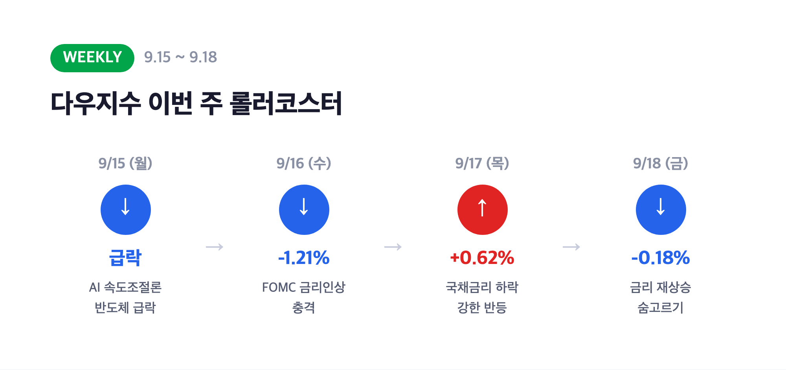
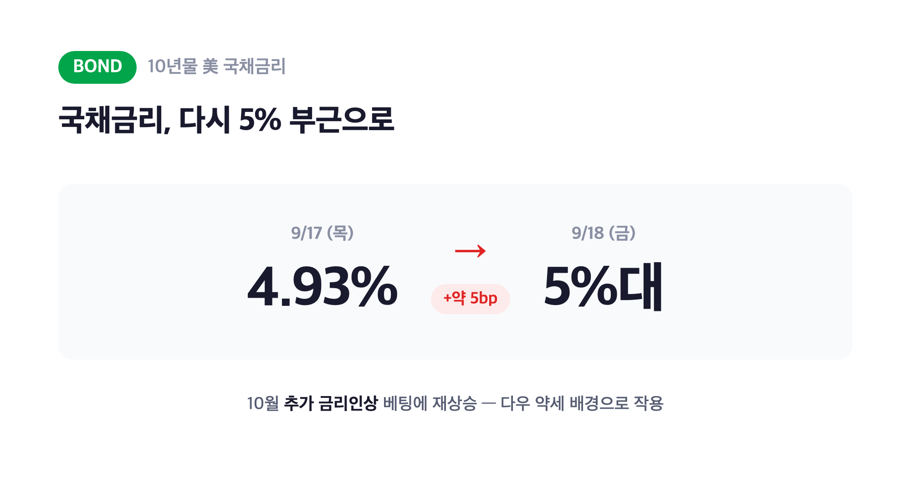
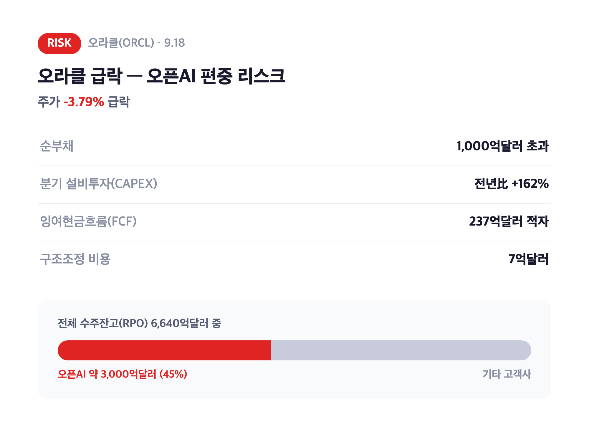
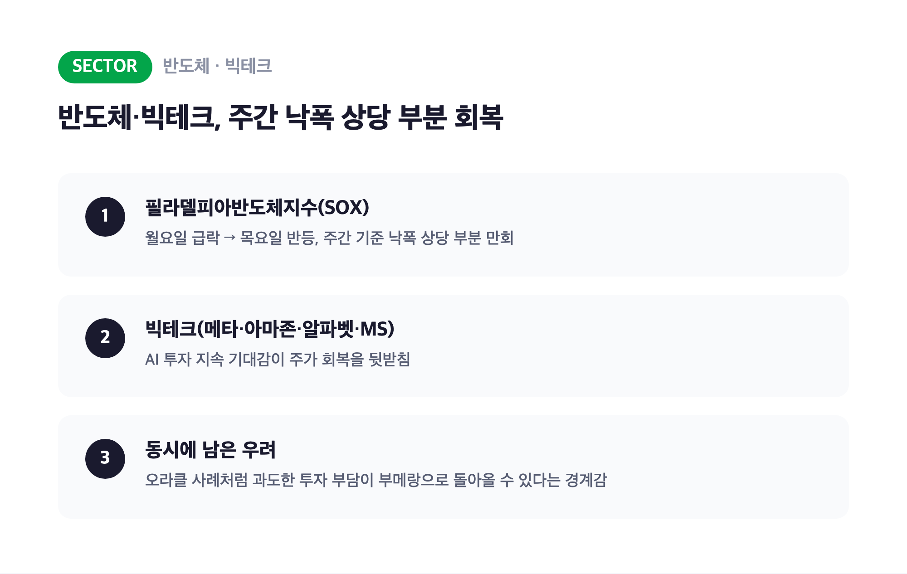
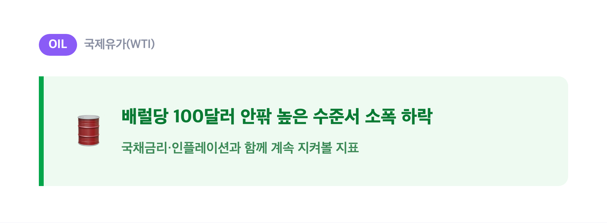
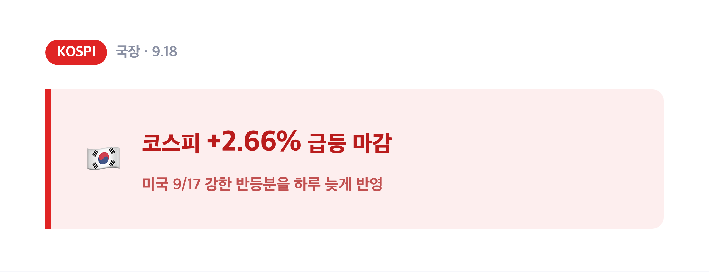

안녕하세요, '내일도 주린이'입니다 👋
어제(9/17) 다우 +0.62%, 나스닥 +1.69% 반등 보고 "오 이제 좀 편해지나" 했는데요, 오늘(9/18)은 또 다우가 살짝 밀리면서 숨고르기 장세였습니다. 생각해보면 이번 주는 진짜 롤러코스터였어요. 월요일엔 AI 속도조절론에 반도체가 통째로 흔들렸고, 수요일엔 FOMC 금리인상 충격에 급락, 목요일엔 하루 만에 반등, 그리고 금요일인 오늘은 다시 국채금리가 5% 부근으로 올라오면서 다우가 소폭 밀렸거든요. 오늘 미장 정리하면서 이번 주 전체 흐름도 같이 짚어볼게요. 그리고 오늘의 진짜 하이라이트, 오라클 급락 얘기도 비중 있게 다뤄보겠습니다.
🇺🇸 미장 마감 시황 – 3대 지수 혼조, 다우는 3월 이후 최악의 한 주
|
다우 51,682.64 (-95.40p, -0.18%) / S&P500 7,650.50 (+12.74p, +0.17%) / 나스닥 26,522.55 (+104.25p, +0.39%) |

| 지수 | 종가 | 등락 | 등락률 |
| 다우존스 | 51,682.64 | -95.40p | -0.18% |
| S&P500 | 7,650.50 | +12.74p | +0.17% |
| 나스닥종합 | 26,522.55 | +104.25p | +0.39% |
9월 18일(현지시간) 뉴욕증시는 3대 지수가 방향이 엇갈리는 혼조 마감을 기록했어요. 다우만 나홀로 밀렸고 S&P500·나스닥은 소폭이지만 상승 마감했습니다. 그런데 이날 하루보다 눈에 띄는 건 주간 성적이에요. 다우지수는 한 주간으로 1.5% 넘게 하락하면서 3월 이후 최악의 주간 성적을 기록했거든요. S&P500과 나스닥도 이날은 올랐지만 한 주 전체로 보면 약세로 마감했습니다. "이날 하루만 보면 별거 아닌데 한 주로 묶어보면 꽤 아프네" 싶은 결과였어요.
📉📈 이번 주 롤러코스터 정리 – AI 속도조절론에서 FOMC, 반등까지
|
9/15 AI 속도조절론發 급락 → 9/16 FOMC 급락(-1.21%) → 9/17 반등(+0.62%) → 9/18 숨고르기(-0.18%) |

| 날짜 | 다우 등락 | 배경 |
| 9/15(월) | 급락 | 앤트로픽 등 AI 업계 인사들의 "AI 개발 속도조절론"에 반도체·빅테크 급락(필라델피아반도체지수 한때 -5.2%) |
| 9/16(수) FOMC | -631.21p, -1.21% | 연준 3년 만의 첫 금리인상(0.25%p) 발표에 급락 |
| 9/17(목) | +317.95p, +0.62% | 국채금리 5%대→4.93%로 하락하며 강한 반등 |
| 9/18(금) | -95.40p, -0.18% | 국채금리 다시 5% 부근으로 올라오며 숨고르기 |
정리하면 월요일 AI 우려발 급락, 수요일 FOMC 충격, 목요일 하루 만의 강한 반등, 그리고 오늘 다시 살짝 숨고르기까지 나흘 만에 방향이 세 번이나 바뀐 셈이에요. 저는 이번 주 뉴욕증시 정리하면서 "이 정도면 그냥 매일이 이벤트네" 싶더라고요. 결국 한 주를 다 더해보면 다우는 3월 이후 최악의 주간 성적으로 마무리됐고, 그만큼 변동성이 큰 한 주였다는 걸 숫자가 그대로 보여줍니다.
💵 국채금리 다시 5% 부근 – 다우 약세 배경 된 10월 추가 인상 베팅
|
10년물 국채금리 4.93% → 5% 부근 (약 5bp 재상승) |

전날(9/17) 4.93%까지 내려왔던 10년물 국채금리가 오늘(9/18)은 다시 5% 부근까지 올라왔어요. 시장에서는 연준이 10월에 추가 금리인상에 나설 가능성에 베팅하면서 금리가 다시 오른 것으로 해석했는데요, 이게 주식의 상대적 고평가 부담을 부각시키면서 다우지수 약세 요인으로 작용했습니다. 이번 달 FOMC에서 3년 만에 첫 금리인상을 주도한 연준 의장의 매파적 스탠스가 이어지고 있다는 신호로 시장이 받아들인 셈이에요. 금리 하나에 하루 만에 지수 방향이 바뀌는 걸 보면, 저는 이번 주만큼은 국채금리 창을 계속 켜놓고 지낸 것 같습니다.
🖥️ 오늘의 하이라이트, 오라클 -3.79% 급락 – 오픈AI 한 곳에 쏠린 편중 리스크
|
오라클(ORCL) -3.79% / RPO 6,640억달러 중 약 3,000억달러가 오픈AI 한 곳 |

오늘 미장에서 가장 눈에 띈 종목은 단연 오라클이었어요. 오라클 주가는 9월 18일 하루 만에 -3.79% 급락했습니다. 다우가 -0.18%, 나스닥이 +0.39%였던 걸 감안하면 오라클 혼자 유독 크게 빠진 거예요.
| 리스크 요인 | 내용 |
| 순부채 | 1,000억달러 초과 |
| 분기 설비투자(CAPEX) | 전년 대비 162% 급증 |
| 잉여현금흐름(FCF) | 237억달러 적자 |
| 구조조정 비용 | 7억달러 |
| 전체 수주잔고(RPO) | 6,640억달러 |
| 그중 오픈AI向 | 약 3,000억달러 (거의 절반) |
하락 배경을 하나씩 뜯어보면요, 일단 1,000억달러가 넘는 순부채에 AI 데이터센터 확장으로 분기 설비투자가 162%나 급증하면서 잉여현금흐름이 237억달러 적자를 냈어요. 돈을 버는 속도보다 쏟아붓는 속도가 훨씬 빠르다는 얘기죠. 여기에 인력 구조조정으로 7억달러 규모 퇴직비용까지 발생했고요.
그런데 저는 이 중에서도 제일 눈에 걸리는 건 수주잔고(RPO) 편중이에요. 오라클 전체 RPO 6,640억달러 가운데 약 3,000억달러, 그러니까 거의 절반에 가까운 물량이 오픈AI 한 곳에 몰려있다는 거거든요. "고객사 하나에 이렇게까지 몰빵돼 있다고?" 싶었는데요, 이게 왜 문제냐면 오픈AI 쪽에 조금이라도 이슈가 생기면 오라클의 미래 실적 절반 가까이가 흔들릴 수 있다는 뜻이 되거든요. 금리까지 다시 오르는 국면에서 고밸류에이션 기술주에 대한 위험회피 심리까지 겹치면서, 오늘 오라클이 유독 크게 흔들린 것 같습니다.
🔧 반도체·빅테크 – 주간 기준으로는 낙폭 상당 부분 만회
|
필라델피아반도체지수(SOX), 월요일 급락 이후 주간 기준 낙폭 상당 부분 회복 |

필라델피아반도체지수는 지난 월요일(9/15) AI 개발 둔화 우려로 급락했었는데요, 목요일(9/17) 강한 반등을 거치면서 주간 기준으로는 낙폭을 상당 부분 만회한 것으로 나타났어요. 메타·아마존·알파벳·마이크로소프트 같은 빅테크도 AI 투자를 계속 이어갈 거라는 기대와, 오라클 사례처럼 그 투자 부담이 부메랑으로 돌아올 수 있다는 우려가 동시에 교차하는 흐름이었습니다. 저는 이 지점이 딱 요즘 AI 관련주 전체가 처한 상황을 보여주는 것 같아요. 기대는 여전히 크지만, "그래서 그 돈 다 어디서 벌 건데"라는 질문에 시장이 조금씩 더 예민하게 반응하기 시작한 느낌이거든요.
🛢️ 국제유가 – 100달러 안팎에서 소폭 하락
|
국제유가, 배럴당 100달러 안팎 높은 수준에서 소폭 하락 |

국제유가는 오늘 100달러 안팎의 높은 수준에서 소폭 하락했어요. (소스마다 구체적인 종가 수치가 조금씩 다르게 나와서, 정확한 숫자보다는 "여전히 100달러 안팎에서 소폭 내렸다"는 방향성으로만 정리했습니다.) 유가 자체는 이날 지수 방향을 좌우할 만큼 큰 변수는 아니었지만, 국채금리·인플레이션 이슈와 늘 같이 따라다니는 지표라 계속 눈여겨볼 필요는 있어 보여요.
🇰🇷 국장은 어제(현지 9/17 반등)를 그대로 받아 +2.66% 급등
|
코스피 +2.66% 급등 (미국 9/17 반등분 반영, 한국시간 9/18) |

같은 날(한국시간 9/18) 코스피는 전날 미국 증시의 강한 반등(9/17)을 그대로 받아 +2.66% 급등했었죠. 이 부분은 어제 국장 정리 글에서 이미 자세히 다뤘으니 오늘은 간단히만 짚고 넘어갈게요. 결국 미장이 하루 늦게 국장에 반영되는 흐름이 이번 주에도 반복된 셈이에요.
마무리하며
오늘 정리하면, 다우 -0.18%(51,682.64) / S&P500 +0.17%(7,650.50) / 나스닥 +0.39%(26,522.55)로 3대 지수가 혼조 마감했고, 다우는 주간 기준 3월 이후 최악의 성적을 기록했어요. 국채금리가 다시 5% 부근까지 오른 게 다우 약세의 배경이었고, 오늘의 진짜 하이라이트는 오라클이었습니다. 순부채·설비투자 부담에 더해 수주잔고 절반 가까이가 오픈AI 한 곳에 쏠려있다는 편중 리스크까지 드러나면서 주가가 -3.79% 급락했거든요.
솔직히 월요일부터 오늘까지 다우 방향이 세 번은 바뀐 것 같은데요, 저는 일단 이번 주는 그냥 "변동성이 큰 한 주였다" 정도로 정리하고, 다음 주 국채금리랑 오라클 후속 흐름을 좀 더 지켜보려고 합니다.
오늘도 손절, 내일은 익절. 무럭무럭 자라볼게요 🌱